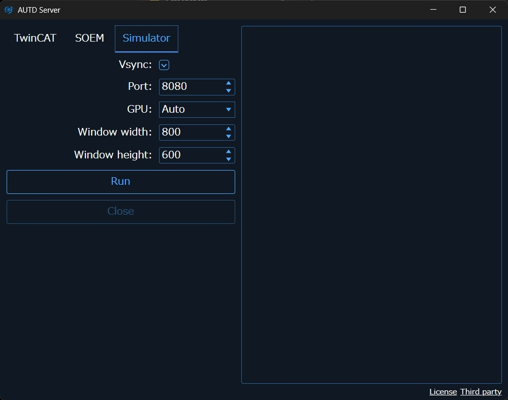
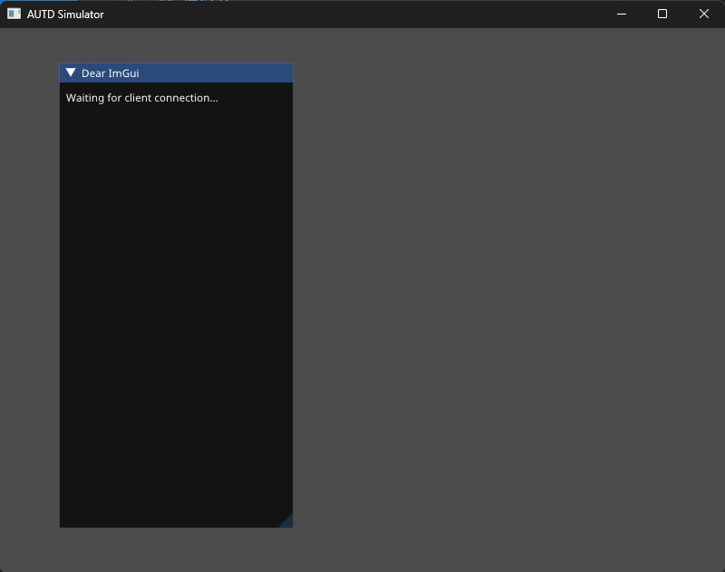
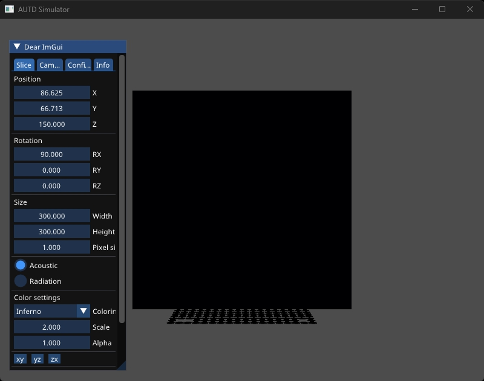
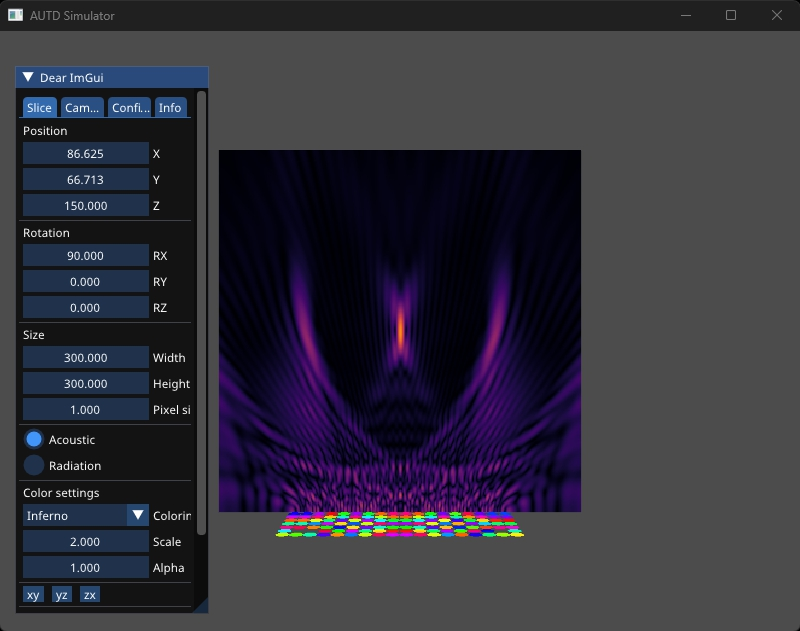

AUTD3 Simulator
AUTD Simulator (以下, シミュレータ) はその名の通りAUTDのシミュレータであり, Windows/Linux/macOSで動作する.
AUTD Server
シミュレータはAUTD Serverに付属している.
GitHub Releasesにてインストーラを配布しているので, これをダウンロードし, 指示に従ってインストールする.
AUTD Serverを実行すると, 以下のような画面になるので, Simulatorタブを開き, Runボタンを押すとシミュレータが起動する.

シミュレータが起動すると接続待ちの状態になる.

この状態で, Simulatorリンクを使ってControllerをopenすると, シミュレータ上には, 振動子の位置に円と, 画面中央に黒いパネルが表示される.

この黒いパネルを“Slice“と呼び, この“Slice“を使って任意の位置の音場を可視化できる. また, その時, 振動子の位相が色相で, 振幅が色強度で表される.

なお, シミュレータで表示される音場はシンプルな球面波の重ね合わせであり, 指向性や非線形効果などは考慮されない.
画面左に表示されているGUIでSliceやカメラの操作が行える.
Sliceタブ
SliceタブではSliceの大きさと位置, 回転を変えられる. 回転はXYZのオイラー角で指定する. なお, 「xy」, 「yz」, 「zx」ボタンを押すと, Sliceを各平面に平行な状態へ回転させる.
また, 「Color settings」の項目ではカラーリングのパレットの変更や, Max pressureの変更ができる. 大量のデバイスを使用すると色が飽和する場合があるので, その時は「Max pressure」の値を大きくすれば良い.
Cameraタブ
Cameraタブではカメラの位置, 回転, Field of View, Near clip, Far clipの設定を変えられる. 回転はXYZのオイラー角で指定する.
Configタブ
Configタブでは音速とフォントサイズ, 及び, 背景色の設定ができる.
また, 各デバイスごとのshow/enable/overheatの設定を切り替えられる. showをOffにした場合は, 表示されないだけで音場に寄与する. enableをOffにすると音場に寄与しなくなる. また, overheatをOnにすると, 温度センサがアサートされた状態を模擬できる.
Infoタブ
Infoタブでは, FPSや各デバイス毎のSilencerやModulation, STMの情報が確認できる.
Silencerの設定は確認できるがこれは音場には反映されない.
「Mod enable」をOnにすると, Modulationが音場に反映されるようになる.
ModulationとSTMは実時間を元にどのインデックスのデータを出力するかを決めている. この時間を表すのが, 「System time」であり, 2000年1月1日0時0分0秒からの経過時間をナノ秒単位で表す.
「Auto play」をOnにすると「System time」が自動的に設定される. そうでない場合は, 手動で時間を進めることができる.